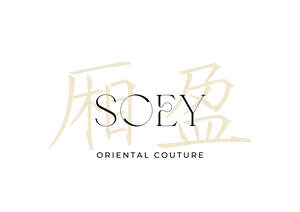

Trade Mark Journal No.2025/038 19 September 2025
UK00004260449 7 September 2025 (3,6,10,14,16,18,20,21,25,26,28,35,41,42)

- Class 3
- Cosmetics for animals; Deodorants for animals; Shampoo for animals; Skin care products for animals.
- Class 6
- Objet d'art in non precious metals.
- Class 10
- Therapeutic garments for animals.
- Class 14
- Jewellery in precious metals; Jewellery of precious metals; Jewellery fashioned of precious metals; Jewellery being articles of precious metals; Jewellery coated with precious metals; Jewellery boxes of precious metals; Precious metals and their alloys; Jewellery made of precious metals; Jewellery in semi-precious metals; Precious jewellery; Articles of jewellery coated with precious metals; Jewellery plated with precious metals; Articles of jewellery made of precious metals; Precious metals; Cases of precious metals for jewels; Jewelry boxes of precious metals; Jewellery in non-precious metals; Jewellery incorporating precious stones; Gemstones, pearls and precious metals, and imitations thereof; Cases of precious metals for horological articles; Jewellery cases of precious metal; Cases of precious metals for clocks; Threads of precious metal [jewellery]; Jewellery fashioned from non-precious metals; Clothing ornaments of precious metals; Small jewellery boxes of precious metals; Jewellery being articles of precious stones; Articles of jewellery with precious stones; Statuettes of precious metal and their alloys; Jewellery caskets of precious metal; Chains made of precious metals [jewellery]; Precious gemstones; Articles of jewellery made of precious metal alloys; Semi-finished articles of precious metals for use in the manufacture of jewellery; Jewellery boxes of precious metal; Jewellery made of plated precious metals; Alloys of precious metals; Insignia of precious metals; Trophies of precious metals; Statues of precious metals; Ornaments, made of or coated with precious or semi-precious metals or stones, or imitations thereof; Precious and semi-precious gems; Jewelry cases of precious metal; Jewelry charms in precious metals or coated therewith; Threads of precious metal [jewelry]; Lapel pins of precious metals [jewellery]; Semi-worked precious metals; Jewellery coated with precious metal alloys; Jewellery cases [caskets] of precious metal; Necklaces of precious metal; Precious and semi-precious stones; Threads of precious metal [jewellery, jewelry (Am.)]; Wire of precious metal [jewellery]; Cuff links made of precious metals with precious stones; Jewellery made of crystal coated with precious metals; Jewelry caskets of precious metal; Cuff links made of precious metals with semi-precious stones; Crucifixes of precious metal, other than jewelry; Bracelets of precious metal; Semi-finished articles of precious stones for use in the manufacture of jewellery; Earrings of precious metal; Personal ornaments of precious metal; Threads of precious metals; Rings [jewellery] made of precious metal; Chain mesh of precious metals [jewellery]; Jewellery made of precious stones; Chains of precious metals; Jewelry boxes of precious metal; Identification bracelets of precious metal [jewelry]; Artificial stones [precious or semi-precious]; Statues and figurines, made of or coated with precious or semi-precious metals or stones, or imitations thereof; Precious jewels; Ornaments for clothing [of precious metal]; Objet d'art made of precious metals; Unwrought and semi-wrought precious stones and their imitations; Jewelry boxes, not of precious metal; Jewellery chain of precious metal for bracelets; Jewellery chain of precious metal for necklaces; Jewellery chain of precious metal for anklets; Statuettes made of semi-precious metals; Synthetic precious stones; Charms [jewellery] of common metals; Precious metal alloys [other than for use in dentistry]; Jewellery made of semi-precious materials.
- Class 16
- Clothing patterns.
- Class 18
- Clothing for animals; Clothes for animals; Clothing for pets; Pets (Clothing for -); Clothing for dogs; Costumes for animals; Animal apparel; Pet clothing; Clothing for domestic pets; Leggings for animals; Dog clothing; Garments for pets; Saddlery, whips and apparel for animals; Articles of clothing for horses; Collars for animals; Collars of animals; Leashes for animals.
- Class 20
- Stuffed animals; Animals (Stuffed -).
- Class 21
- Food containers for pet animals.
- Class 25
- Clothing; Clothing for babies; Clothing for children; Furs [clothing]; Clothing for infants; Bodies [clothing]; Garments for protecting clothing; Collars [clothing]; Jackets [clothing]; Infant clothing; Woolen clothing; Knitwear [clothing]; Parts of clothing, footwear and headgear; Plush clothing; Headbands [clothing]; Headbands for clothing; Capes (clothing); Boas [clothing]; Trunks being clothing; Clothing made of fur; Kerchiefs [clothing]; Aprons [clothing]; Muffs [clothing]; Layettes [clothing]; Clothing layettes; Knitted clothing; Leather clothing; Clothing of leather; Leather (Clothing of -); Gloves [clothing]; Gloves as clothing; Jackets being sports clothing; Paper hats for use as clothing items; Clothing for sports; Sports clothing; Jackets (Stuff -) [clothing]; Latex clothing; Stuff jackets [clothing]; Ready-to-wear clothing; Linen clothing; Clothes; Maternity clothing; Jerseys [clothing]; Denims [clothing]; Shorts [clothing]; Cashmere clothing; Gabardines [clothing]; Oilskins [clothing]; Silk clothing; Veils [clothing]; Hoods [clothing]; Corsets [clothing, foundation garments]; Windproof clothing; Wristbands [clothing]; Embroidered clothing; Belts [clothing]; Belts for clothing; Bandeaux [clothing]; Waterproof clothing; Rainproof clothing; Casual clothing; Visors [clothing]; Clothing for leisure wear; Bottoms [clothing]; Playsuits [clothing]; Ready-made clothing; Woven clothing; Drawers [clothing]; Drawers as clothing; Leisure clothing; Athletic clothing; Ties [clothing]; Tops [clothing]; Clothing for cycling; Weatherproof clothing; Pockets for clothing; Water-resistant clothing; Handwarmers [clothing]; Clothing for skiing; Fabric belts [clothing]; Thermal clothing; Beach clothing; Chaps (clothing); Cowls [clothing]; Men's clothing; Fishing clothing; Dance clothing; Mitts [clothing].
- Class 26
- Brooches for clothing; Brooches [clothing accessories]; Clothing buckles.
- Class 28
- Toys for animals; Toys for pet animals; Clothing for dolls; Toys and playthings for pet animals; Stuffed animals [toys]; Articles of clothing for toys; Doll clothing; Articles of clothing for dolls.
- Class 35
- Retail services connected with the sale of clothing and clothing accessories; Advisory services relating to business management and business operations; Business management; Business administration services; Commercial business management; Business marketing services; Business management advice relating to manufacturing business; Business planning services; Business consulting; Business marketing consulting services; Business promotion services; Business project management; Business information agency services; Administration of cultural and educational exchange programs.
- Class 41
- Animal exhibitions and training of animals; Providing cultural activities; Entertainment, sporting and cultural activities; Sporting and recreational activities; Organisation of events for cultural, entertainment and sporting purposes; Cultural activities; Conducting of cultural activities; Organisation of entertainment and cultural events; Providing information relating to recreational activities; Entertainment services in the nature of arranging social entertainment events; Educational and entertainment services, namely, providing motivational speaking services; Conducting of entertainment activities; Providing user reviews for entertainment or cultural purposes; Organisation and holding of fairs for cultural or educational purposes; Education, entertainment and sport services; Cultural, educational or entertainment services provided by art galleries; Educational services relating to dancing; Cultural services; Organisation of animal exhibitions for cultural or educational purposes; Organization of exhibitions for cultural or educational purposes; Exhibitions (Organization of -) for cultural or educational purposes; Organization of exhibitions for cultural and educational purposes; Educational services for the dramatic arts; Organisation of exhibitions for cultural and educational purposes; Organisation of exhibitions for cultural or educational purposes; Conducting of educational events; Conducting of cultural events; Organizing cultural and arts events; Arranging and conducting of cultural activities; Organisation of cultural activities for summer camps; Provision of recreational activities; Educational and training services relating to games; Arranging of conferences relating to cultural activities; Educational and instruction services relating to arts and crafts; Educational services for providing courses of education; Organising community cultural events; Educational services relating to business.
- Class 42
- Design of clothing, footwear and headgear; Designing of clothing; Design of clothing; Design of clothing accessories; Services for the design of business premises; Design of business premises.
EUNORIA CREATIVE UK LTD